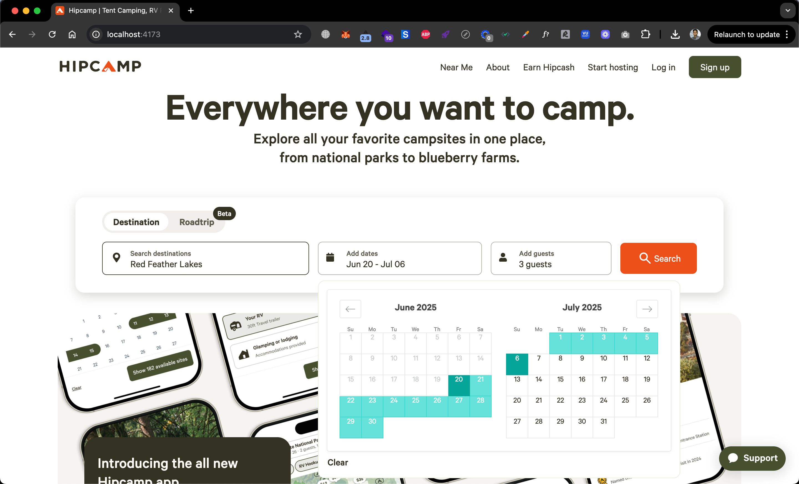
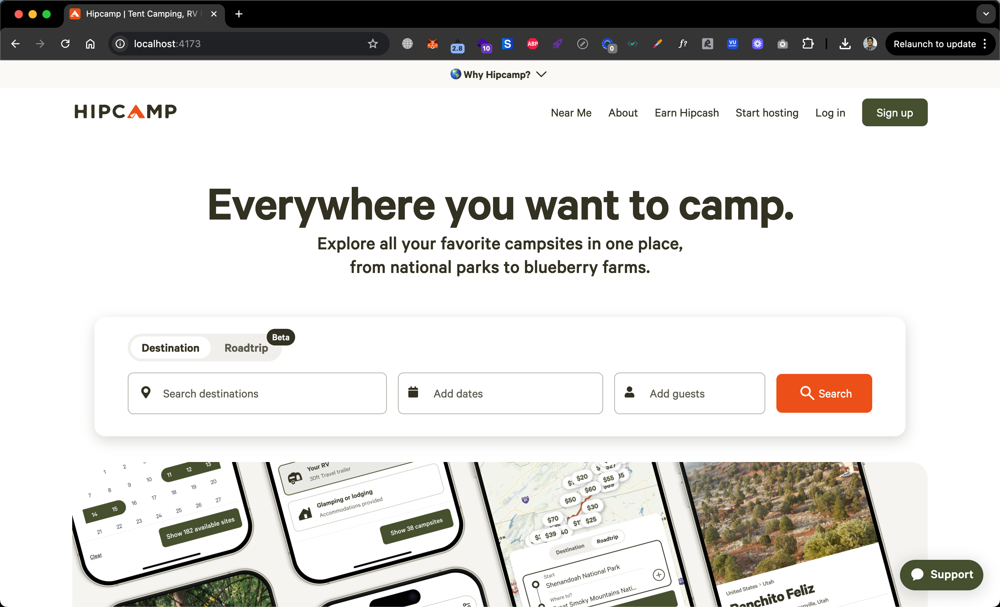

Hipcamp Outdoor Clone
Nature-focused booking platform for campsites, RV parks, and outdoor experiences - developed for AI training in niche travel markets and outdoor activity recommendations.
Outdoor Booking Demo
AI Training Purpose
This Hipcamp clone was created to train AI models in outdoor travel recommendation systems, campsite availability prediction, and weather-based booking optimization. The platform provides specialized data for AI learning in the growing outdoor adventure market.
Platform Features



Project Specifications
Development Objective
Create a comprehensive outdoor booking platform clone to generate specialized training data for AI models focusing on nature travel, seasonal booking patterns, and outdoor experience recommendations.
Technology Implementation
- React.js with Hooks
- Node.js & Express.js
- MongoDB with Geospatial
- Mapbox Integration
- Stripe Payment System
- Cloudinary for Images
- Jest Testing Framework
Platform Features
- Campsite & RV park listings
- Map-based property discovery
- Weather integration
- Host property management
- Review & rating system
- Seasonal pricing
- Mobile booking app
- Outdoor activity guides
AI Dataset Generated
- 1,000+ campsite scenarios
- Weather-based booking patterns
- Seasonal demand data
- Outdoor activity preferences
- Geographic distribution patterns
- Equipment rental behaviors
Team Collaboration
- Muhammad Ahmad: Frontend & Map Integration
- Hamza Maqbool: Backend & Database Design
- Sarah Rodriguez: Nature-Inspired UI/UX
- Alex Kim: Mobile Application
- Tom Johnson: Deployment & Monitoring
Business Impact
- Specialized outdoor AI training
- Seasonal prediction models
- Geographic demand forecasting
- Weather-impact analysis
- Niche market AI optimization